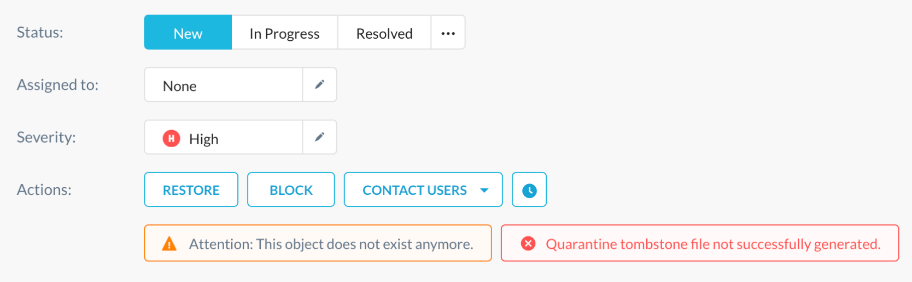

DLP
Netskope Data Loss Prevention (DLP) protects sensitive data in the cloud with accuracy and precision, with the ability to inspect all sanctioned and unsanctioned cloud services. When a policy detects a DLP violation, the incident is displayed on this page. To access the DLP Incidents page, go to Incidents > DLP.
 |
The DLP page provides this information about each incident:
Object: Shows the file or object that triggered the violation. Clicking on the object opens a page with more details where you can change status, assign incidents, change severity, and take actions.
Application: Shows the application used that triggered the violation.
Exposure: Shows files based on their exposure, like Public - Indexed, Public - Unlisted, Public, Private, Externally Shared, Internally Shared, Enterprise Shared, and Cross-Geo.
Violation: Shows the number of violations within the file.
Last Action: Shows the action that was taken, like sending an alert.
Status: Shows the state of the event. There are three status categories: New, In Progress, and Resolved. You can edit the status of an event by enabling the checkbox for one or more objects and choosing one of these options from the Mark Status As dropdown list.
Assignee: Shows who are tasked with monitoring the event. You can edit who receives notifications about this event by enabling the checkbox for one or more objects and selecting an email address from the Assign dropdown list.
Severity: Shows the level of severity. There are four levels: low, medium, high, and critical. You can edit the severity level by selecting enabling the checkbox for one or more objects and choosing a different severity level from the Severity dropdown list. In addition, if Unique Count for the DLP rule is ON, then the severity will display count as Count: <number-of-violations> unique. If the Unique Count is not enabled, the severity count is displayed as Count <number of violations>.
Timestamp: Shows the date and time of the violation.
You can choose which columns are shown by clicking the gear icon and enabling specific columns.
To see more details about an object, click on the object name. The Incidents page for specific objects has three sections that allow you to:
Manage incidents: The top of the page allows you to change status, assign incidents, change severity levels, and take actions like encrypt a file, change file permissions, contact users, check object history, delete, and download the file. Click View More to see basic info, shared links, collaborators, and version history.
Note
When tombstone fails, the Incidents > DLP page displays an error message next to an existing warning/information message. A sample warning and error message follows:
In Google Drive, when you change ownership of a folder, it changes the ownership of the selected folder only and does not include the files inside. For example, if you change the ownership of a folder from user A to user B:
the ownership of the folder changes to user B.
the ownership of the contents of the folder i.e., files and folders does not change to user B. It remains with user A.
This is how Google handles change in folder ownership.
See Incident details: This section allows you to see object specifics, like timestamp, user, action taken, file path, file name, file region, etc. Clicking on the file name opens the File Details page.
Review violations: This section provides a list of all DLP violations for this object, with links to the correlated DLP Rule, DLP Profile, and DLP Policy. When expanded, the list will display violations.
To view the top Applications, Exposures, and Policies with violations, click Analyze.
To customize what's shown on the page, click + Add Filter and select the elements to show. For example, you can choose the action Block and an application so only incidents that match these criteria are shown. For advanced search, click the filter icon and enter text in the search field.
You can also specify the date ranges using the dropdown in the top right corner, and change the number of rows shown using the Rows per page dropdown list.
To export information to a spreadsheet, hover over Export CSV and click Summary or Details.
Incidents Related to Deleted Files
In earlier releases, Netskope did not display incidents related to deleted files with violations. Starting this release, any violated file that is deleted will be displayed in the Incidents > DLP page. To identify if a file is deleted:
Go to Incidents > DLP and click the object name.
Under Actions, an attention message is displayed stating that the object does not exist anymore.